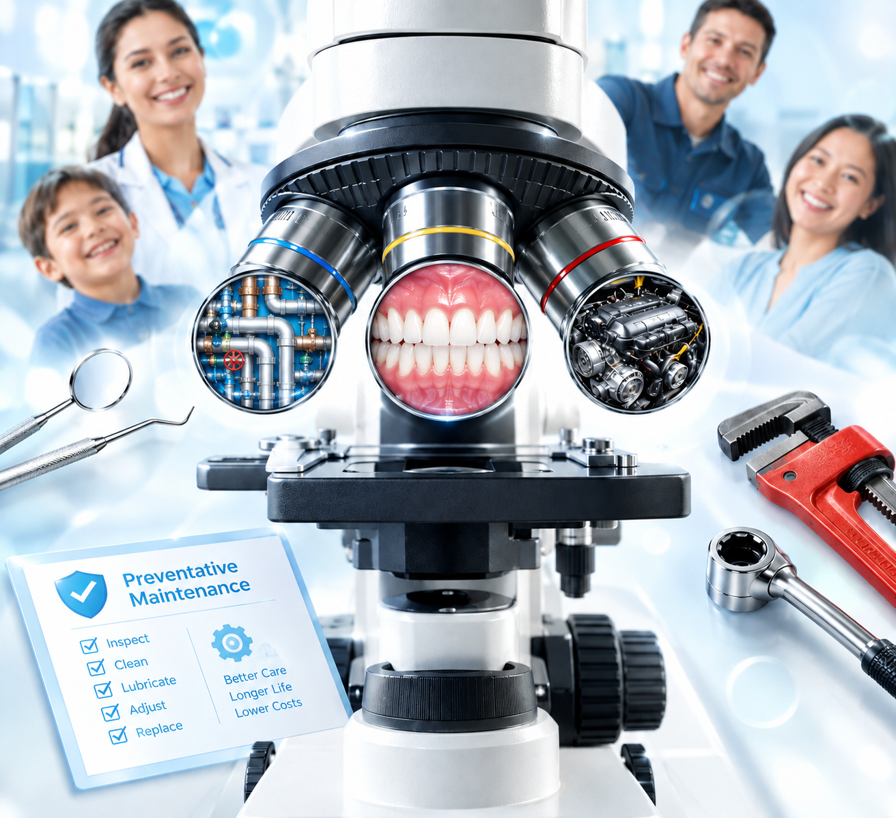

Dr. Chia-Lin Lo
羅嘉林
Dentist, Researcher, and AI-focused Doctoral Student.
Doctoral Student
Doctoral Program, Graduate Institute of Clinical Medical Sciences.
Experienced Dentist with a growing research focus on AI-assisted healthcare applications.
Education
Doctor of Dental Surgery
Artificial Intelligence in Medical & Dental Research
Mandibular Advancement Device (MAD) Prediction
Predicting phenotypes responsive to Mandibular Advancement Device therapy in preventing airway collapse.
Using CBCT-derived fluid dynamics simulations together with Cephalometric imaging to develop predictive models capable of identifying patients most likely to benefit from MAD therapy for Obstructive Sleep Apnea management.
Let's Connect
- Email: identist1@gmail.com